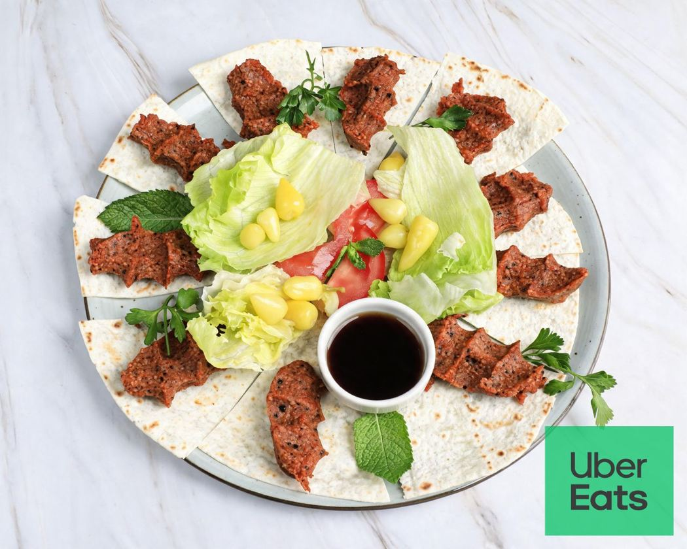
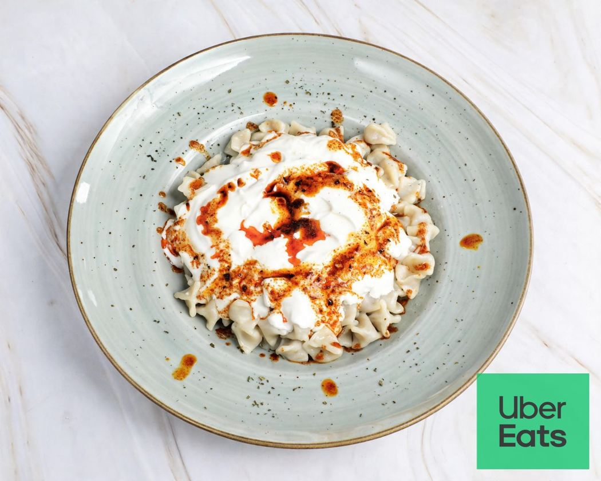
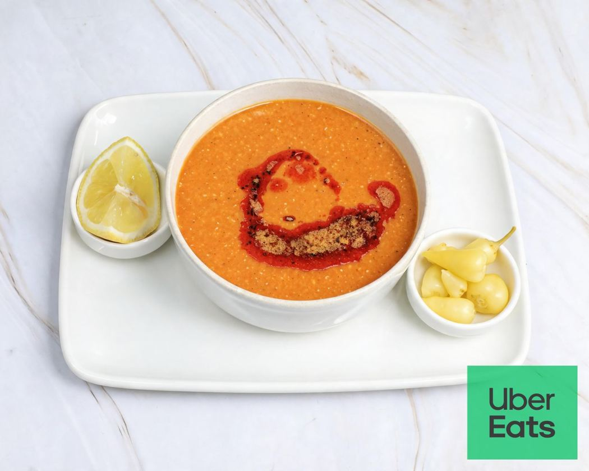

📍 Adresse & Anfahrt
Gartenstraße 26
61449 Steinbach (Taunus)



Hausgemachte vegane Çiğköfte, köstliche Mantı und wärmende Linsensuppe – dazu Frühstück, feine Kuchen und aromatischer Kaffee.
Entdecken Sie die Spezialitäten, für die sich ein Besuch im Café Devin lohnt.

Ob gemütliches Frühstück am Wochenende, herzhafte Spezialitäten oder ein süßer Nachmittag mit Kaffee und Kuchen: Im Café Devin erwartet Sie eine vielfältige Auswahl in entspannter Atmosphäre.
Frühstück entdecken →Montag – Freitag07:00 – 20:00 Uhr
Samstag – Sonntag08:00 – 20:00 Uhr
Frühstück & BrunchAm Wochenende bis 14:00 Uhr
Gartenstraße 26
61449 Steinbach (Taunus)
06171 8873888
Reservierungen telefonisch anfragen.
Aktuelle Neuigkeiten und Einblicke aus dem Café.
Instagram besuchen ↗cafedevin@hotmail.com
E-Mail schreiben